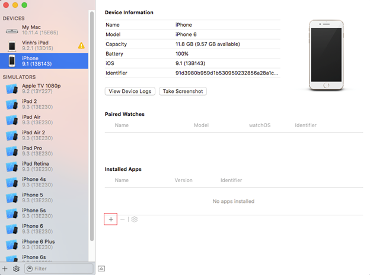
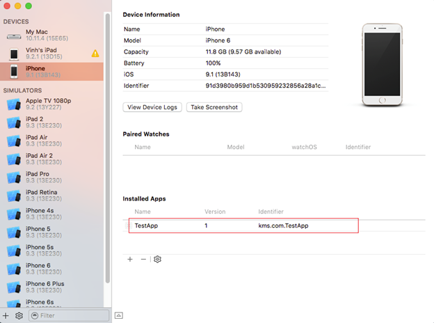

Install the app on user devices
.ipa file, follow these steps:- Open Xcode, then navigate to Window > Devices and Simulators.
- Choose your device from the Devices list.
- Click Add (+) to browse the
.ipafile. - Once installed successfully, the application appears in the Installed Apps section.